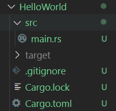
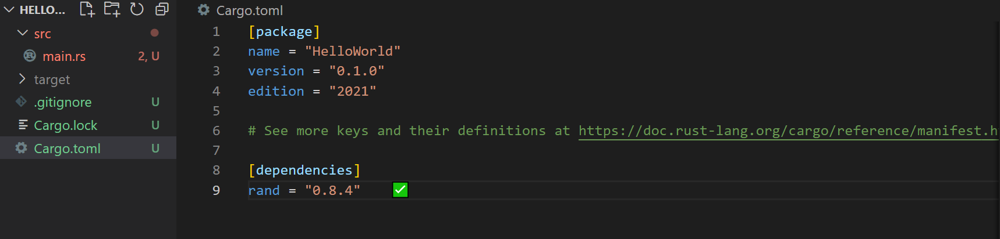
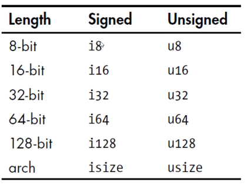
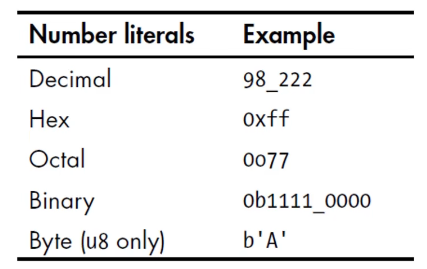
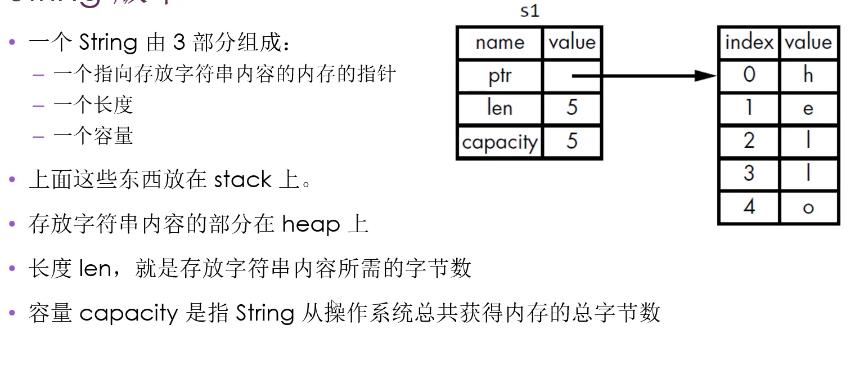

环境配置
安装Rust
Rust官网：官网
安装好后可以运行命令cargo --version检测，出现版本号则安装完毕
VsCode配置
我一共安装了三个：
- rust-analyzer：它会实时编译和分析你的 Rust 代码，提示代码中的错误，并对类型进行标注。
- rust syntax：语法高亮
- CodeLLDB：进行调试。
第一次调试时可能会出现报错，提示无法连接什么的，这时候需要挂一个梯子去官网下载vsix，然后在VsCode插件安装中选择通过vsix安装插件即可。
通过cargo新建项目
cargo new 项目名称
例如，在一个空文件夹下执行该命令：cargo new HelloWorld，文件结构如下：

/src/main.rs为源代码
/Cargo.lock为编译后生成的，负责追踪项目依赖的精确版本
/Cargo.tomlCargo的配置格式，其中：
- pacakge 配置包的项目名，项目版本，项目作者，Rust版本
- dependencies 列出项目的依赖项
cargo命令
cargo bulid 构建项目
cargo run 构建和运行项目
cargo check 检查代码
cargo build --release 为发布进行构建（编译时进行优化，时间更长但效果更好）
cargo依赖(库)
引入方法

如图，在Cargo.toml中的[dependencies]下写入需要的包即可，如果VSCode配置正确，将会自动启动服务器进行下载。
换源
需要注意的是，源crate.io的服务器全部部署在北美洲，国内访问过于缓慢，需要进行换源，具体操作是在$HOME/.cargo/下新建config文件，写入如下内容：
1
2
3
4
5
6
7
8
9
10
11
12
13
14
15
16
17
18
19
20
21
| [source.crates-io]
registry = "https://github.com/rust-lang/crates.io-index"
# 替换成你偏好的镜像源
replace-with = 'tuna'
# 清华大学
[source.tuna]
registry = "https://mirrors.tuna.tsinghua.edu.cn/git/crates.io-index.git"
# 中国科学技术大学
[source.ustc]
registry = "git://mirrors.ustc.edu.cn/crates.io-index"
# 上海交通大学
[source.sjtu]
registry = "https://mirrors.sjtug.sjtu.edu.cn/git/crates.io-index"
# rustcc社区
[source.rustcc]
registry = "git://crates.rustcc.cn/crates.io-index"
|
理解
在build后，cargo会生成Cargo.lock文件，此后的生成都将以Cargo.lock中的依赖版本进行构建，直到我们手动更新Cargo.toml后重新build，修改后的版本将被写入Cargo.lock并构建。这样保证了可重现的构建版本。
Rust引入
接下来在实战中理解rust语言：
猜数字-1
1
2
3
4
5
6
7
8
9
| use std::io;
fn main() {
println!("猜数！");
println!("猜测一个数！");
let fifo = 1;
let mut guess = String::new();
io::stdin().read_line(&mut guess).expect("无法读取行");
println!("你猜测的数是：{}",guess);
}
|
解释：
use std::io 导入库，use + 库名字 + :: + 接口名字fn 代表声明一个函数，函数体依旧用花括号圈起来。println! Rust的输出，这是一个宏，!就是代表了这是一个宏let fifo = 1 Rust的声明变量，Rust中认为变量默认都是不可变的，即一次声明不可更改。mut 同样是声明，其中的mut表示这个变量可变。String::new() String是Rust中的一个类型，::代表了后面的函数是该类型中的一个关联函数，关联函数是针对类型实现的，不是针对实例实现的，可以理解为Java中的静态方法。let mut guess = String::new() 代表了将可变变量guess绑定到了String::new()的返回值上，=有绑定的意思。read_line(&mut guess) 传的是引用，这点和C++很像，为了改变guess的值，显然也要用mut表示这个变量可变。io::stdin().read_line(&mut guess) 其中的.代表了后面的函数是该实例中的一个函数。.expect体现了Rust的安全性，这里不写这个expect编译会警告
println!("你猜测的数是：{}",guess); 其中的{}为占位符，输出时会被替换为后面变量的值，多个{}按顺序进行替换。
猜数字-2
1
2
3
4
5
6
7
8
9
10
11
12
13
14
15
16
17
18
19
20
21
22
23
24
25
26
27
| use std::io;
use rand::Rng;
use std::cmp::Ordering;
fn main() {
println!("猜数！");
let secert_number = rand::thread_rng().gen_range(1, 101);
println!("神秘数字是：{}", secert_number);
println!("猜测一个数！");
let mut guess = String::new();
io::stdin().read_line(&mut guess).expect("无法读取行");
let guess:u32 = guess.trim().parse().expect("Please type a number!");
println!("你猜测的数是：{}",guess);
match guess.cmp(&secert_number) {
Ordering::Less => println!("Too small!"),
Ordering::Equal => println!("You win!"),
Ordering::Greater => println!("Too big!"),
}
}
|
解释：
use rand::Rng 使用之前下载的crate.let guess:u32 = guess.trim().parse().expect("Please type a number!"); 重复定义了guess,在Rust中，这不会报错，新定义的guess会将上文的guess掩盖，Rust一般自动推导类型，但可以通过:+类型显式定义类型。match guess.cmp(&secert_number) cmp为比较器，比较guess和secert_number,之后在大括号中枚举返回类型所有情况的动作，程序会根据条件匹配进行执行，这是match的作用。
Rust的自动推导十分强大，在这段代码中，secert_number 类型是由编译器自动推断的，一般为i32,但由于这里与已知为 u32 的 guess 进行了 cmp,所以编译器会将 secert_number 在一开始就推断为 u32。
猜数字-3
1
2
3
4
5
6
7
8
9
10
11
12
13
14
15
16
17
18
19
20
21
22
23
24
25
26
27
28
29
30
31
32
33
34
35
36
37
| use std::io;
use rand::Rng;
use std::cmp::Ordering;
fn main() {
println!("猜数！");
let secert_number = rand::thread_rng().gen_range(1, 101);
println!("神秘数字是：{}", secert_number);
loop {
println!("猜测一个数！");
let mut guess = String::new();
io::stdin().read_line(&mut guess).expect("无法读取行");
let guess:u32 = match guess.trim().parse() {
Ok(num) => num,
Err(_) => {
println!("Please input again!");
continue;
}
};
println!("你猜测的数是：{}",guess);
match guess.cmp(&secert_number) {
Ordering::Less => println!("Too small!"),
Ordering::Greater => println!("Too big!"),
Ordering::Equal => {
println!("You win!");
break;
}
}
}
}
|
解释：
- expect 会让程序 panic 后停止执行，如果我们既想要捕捉异常，也不想让程序崩溃，我们可以结合返回值类型和 match 来实现，如果返回是Ok，则说明正确执行，将值返回即可，如果返回是 Err , 那么我们就输出错误信息后 continue.
- 如果我们不关心例如 Err 的返回内容，只需要
_表示即可。
- Loop 是 Rust 中的无限循环。
Rust学习
变量与可变性
- 声明变量使用 let 关键字
- 默认情况下，变量是不可变的。
- 声明变量时，在变量前面加上 mut ，就可以使变量可变。
变量与常量
- 常量： 常量在绑定值后不可变，与不可变的变量有区别：
- 不可以用 mut , 常量永远不可变。
- 声明常量使用 const 关键字，它的类型必须被标注。
- 常量可以在任何作用域内进行声明，包括全局作用域。
- 常量只可以绑定到常量表达式，无法绑定到函数的调用结果或只能在运行时才能计算出的值。
- 在程序运行期间，常量在其声明的作用域内一直有效
- 命名规范： Rust 里常量使用全大写字母，每个单词之间用下划线分开。
例子：const MAX_POINTS:u32 = 100_000
Shadowing
- 可以使用相同的名字声明新的变量，新的变量就会 shadow (隐藏) 之前声明的同名变量。
- shadow 和把变量标记为 mut 是不一样的：
- 如果不使用 let 关键字，那么重新给非 mut 的变量赋值会导致编译时错误
- 而使用 let 声明的同名新变量 也是不可变的
- 使用 let 声明的同名新变量，它的类型可以与之前不同。
数据类型
- Rust 是静态编译语言，在编译时必须知道所有变量的类型。
- 基于使用的值，编译器通常能够推断出它的具体类型。
- 但如果可能的类型比较多，就必须添加类型的标注，否则编译报错
标量类型
- 一个标量类型代表一个单个的值
- Rust 有四个主要的标量类型：
- 整数类型
- 浮点类型
- 布尔类型
- 字符类型
整数类型
- 整数类型没有小数部分
- 无符号整数类型以 u 开头
- 有符号整数类型以 i 开头
- 整数类型列表：
isize 和 usize 类型的位数由程序运行的计算机的架构所决定。例如如果是 64 位计算机，则位数为 64 位。
- 整数字面值：
- 整数溢出： 在调试模式下编译出的程序，在溢出时会 panic。 但在发布模式下编译出的程序，在溢出时进行环绕操作（和C语言无符号整数一样），不会 panic。
i32 是默认类型，因为现代 CPU 上 i32 速度挺高。
浮点类型
Rust 有两种基础的浮点类型，也就是含有小数部分的类型。
- f32，32 位，单精度
- f64，64 位，双精度
f64 是默认类型，因为现代CPU上 f64 和 f32 的速度差不多，而且精度更高。
布尔类型
- Rust 布尔类型也是两个值：true 和 false
- 一个字节大小
- 符号是 bool
字符类型
- Rust 语言中 char 类型被用来描述语言中最基础的单个字符。
- 字符类型的字面值使用单引号
- 占用 4 字节大小 区别于C语言的 1 字节
- 是 Unicode 标量值，可以表示比 ASCII 多得多的字符内容：拼音、中日韩文、零长度空白字符、emoji 表情等
复合类型
- 复合类型可以将多个值放在一个类型里
- Rust 提供了两种基础的复合类型：元组（Tuple)、数组
Tuple
- Tuple 可以将多个类型的多个值放在一个类型里
- Tuple 的长度是固定的：一旦声明就无法改变
- Tuple 创建
- 在小括号里，将值用逗号分开。
- Tuple 中的每个位置都对应一个类型，Tuple 中各元素的类型不必相同。
- 可以使用模式匹配来解构一个 Tuple 来获取元素的值。
- 在 Tuple 变量使用点标记法。
1
2
3
4
| let tup:(i32, f64, u8) = (500, 6.4, 1);
let (x, y, z) = tup;
println!("{}, {}, {}", tup.0, tup.1, tup.2);
|
数组
- 数组可以将多个值放在一个类型里。
- 数组中每个元素的类型必须相同
- 数组的长度也是固定的。
- 数组声明：在中括号里，各值用数组分开。
- 数组类型：用这种形式表示
[类型;长度]
- 如果数组中每个元素值相同，那么可以这样声明：
[值;长度]
- 数组访问和 C 语言一样，使用索引访问。
1
2
| let arr = [1, 2, 3, 4];
let arr:[i32;5] = [1, 2, 3, 4, 5]
|
函数
- 声明函数使用 fn 关键字
- 依照惯例，针对函数和变量名，Rust 使用 snake case 命名规范（所有字母小写，单词之间使用下划线分开）
- 函数签名里，必须声明类型。
- 在 -> 符号后面声明函数返回值的类型，但是不可以为返回值命名
- 在 Rust 里面，返回值就是函数体里面最后一个表达式的值。
- 若想提前返回，需要使用 return 关键字，并指定一个值。
1
2
3
4
5
6
7
8
9
10
11
12
13
| fn main() {
println!("Hello world");
another_function(5);
}
fn another_function(x:i32) {
println!("Another function")
}
fn five(x : i32) -> i32 {
x + 5
}
|
- 函数体由一系列语句组成，可选的由一个表达式结束。
- Rust 是一个基于表达式的语言
- 语句是执行一些动作的指令
- 表达式会计算并产生一个值
- 函数的定义也是语句
- 语句不返回值，所以不可以用 let 将一个语句赋给一个变量，例如：
let y = (let y = 6);是不正确的。
1
2
3
4
5
6
7
8
9
| let y = {
let x = 1;
x + 3
}
let y = {
let x = 1;
x + 3;
}
块中最后一个表达式可以作为块值
|
函数定义在后，使用在前在 Rust 中是被允许的。
注释
和C大致相同。
控制流
if 语句
- if 表达式的条件必须是 bool 类型
- if 表达式中，与条件相关联的代码块就叫做分支
- 写法：除了没括号之外，写法类 C
- 如果使用了多于一个 else if , 最好用 match 来重构代码
1
2
3
4
5
| if number < 5 {
println!("condition was true")
} else {
println!("condition was false")
}
|
循环
- Rust 提供了 3 种循环，分别是： loop , for , while
Loop
- Loop 关键字告诉 Rust 反复执行一块代码，直到喊停
- 可以在 Loop 循环中使用 break 关键字来告诉程序终止循环
1
2
3
4
5
6
7
8
9
10
11
12
13
14
| let mut counter = 0;
let result = loop {
counter += 1;
if counter == 10 {
break counter * 2
}
};
println!("The result is:{}", result)
返回值为：20
|
while
for
- 可使用 while 和 loop 来遍历集合，但效率低下且容易出错
- 遍历集合使用 for 循环更加简洁紧凑
1
2
3
4
5
6
7
8
9
| let a = [10,20,30,40,50];
for element in a.iter() {
println!("the value is: {}",element);
}
for number in (1..4).rev() {
println!("{}!",number);
}
|
所有权
引入
- Rust 的核心特性就是所有权
- 所有程序在运行时都必须管理他们使用计算机内存的方式
- 有些语言有垃圾收集机制，在程序运行时，他们会不断地寻找不再使用的内存。
- 在其它语言中，程序员必须显式的分配和释放内存。
- 内存是通过一个所有权系统来管理的，其中包含一组编译器在编译时检查的规则。
- 由于这种管理工作提前到编译时，所以所有权特性不会减慢程序的运行速度。
规则
- 每个值都有一个变量，这个变量是该值的所有者。
- 每个值同时只有一个所有者
- 当所有者超出作用域时，该值将被删除
- Scope 就是程序中一个项目的有效范围
- Rust 中对于某个值来说，当拥有它的变量走出作用范围时，内存会立刻自动交还给操作系统。
变量和数据交互的方式：移动（Move）
简单类型
整数是已知且固定大小的值，这两个 5 都被压到了 stack 中，这叫复制
复杂类型
1
2
| let s1 = String:from("hello");
let s2 = s1;
|

在 Rust 中，只复制了栈上类似指针的内容，且为了避免由于上述规则带来二次内存释放的严重问题，所以 Rust 会复制 s1, 并且让 s1 失效，这一套操作被称为移动。
函数
- 将值传递给函数会发生移动或复制。
- 复制一般会是简单类型，实现 Copy 的类型
- 移动则是复杂类型
1
2
3
4
5
6
7
8
9
10
11
12
| fn main() {
let s = String::from("Hello world");
take_ownership(s);
let x = 5;
makes_copy(x);
println!("x:{}",x)
println!("s:{}",s)
}
|
返回值
- 返回值的所有权也会被移交给上层函数，由上层函数维护所有权。
1
2
3
4
5
6
7
8
9
10
11
12
13
14
15
16
17
18
19
20
21
| fn main() {
let s1 = gives_ownership();
let s2 = String::from("hello");
let s3 = takes_and_gives_back(s2);
} 释放 s1,s3 至于 s2 已经发生移动，所有权被转移到了函数中
fn gives_ownership() -> String {
let some_string = String::from("hello");
some_string
}
fn takes_and_gives_back(a_string: String) -> String {
a_string
}
fn function() -> i32{
i = 32;
i
}
|
引用与借用
&表示引用：允许引用某些值而不获取所有权。- 我们把引用作为函数参数这个行为叫做借用。
- 和变量一样，引用默认也是不可变的。
- 要想让引用可变，和变量一样，在引用前加 mut 即可，例如：
& mut s1
- 可变引用有一个重要的限制：在特定作用域内，对某一块数据，只能有一个可变的引用。（防止数据竞争）
- 不可以同时拥有一个可变引用和一个不变的引用，因为可变引用会让不变引用失效。
- 悬空引用：一个指针引用了内存中的某个地址，而这块内存可能已经释放并分配给其他人使用了。
- 在 Rust 里，编译器可保证引用永远不是悬空引用。
1
2
3
4
5
6
7
8
9
10
| fn main() {
let s1 = String::from("Hello");
let len = calculate_length(&s1);
println!("The length of '{}' is {}", s1, len);
}
fn calculate_length(s: &String) -> usize {
s.len()
}
|
切片
- Rust 另一种不持有所有权的数据类型：切片（Slice）
字符串切片
- 字符串切片是指向字符串中一部分内容的引用
- 形式：
[开始索引...结束索引] 左闭右开
- 字符串切片的范围索引必须发生在有效的 UTF-8 字符边界内，如果尝试从一个多字节的字符中创建字符串切片，就会 panic.
- 字符串字面值就是字符串切片。
1
2
3
4
5
6
7
| let s = String::from("Hello world!");
let hello = &s[0..5];
let world = &s[6..11];
let whole = &s[0..11];
|
一个例子：
1
2
3
4
5
6
7
8
9
10
11
12
13
14
15
16
17
18
| fn main() {
let my_string = String::from("Hello world");
let wordIndex = first_world(&my_string[..]);
let my_string_literal = "hello world";
let worldIndex = first_world(my_string_literal);
}
fn first_world(s: &str) -> &str {
let bytes = s.as_bytes();
for (i, &item) in bytes.iter().enumerate() {
if item == b' ' {
return &s[..i];
}
}
&s[..]
}
|
其他类型切片
1
2
3
4
| fn main() {
let a = [1,2,3,4,5];
let slice = &a[1..3];
}
|